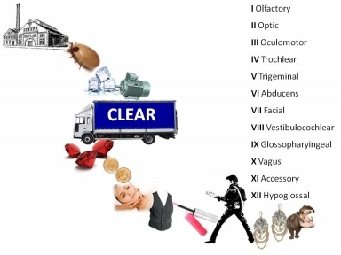
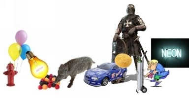

“Interest level is measured by how much you remember.”
~ Philip A. Bossert
In this chapter, I want to show you the power of turning information into art. All of the systems taught in this book can be enhanced by turning them into a drawing, painting or picture. When you use more of your creativity you will be using more of your memory. It is a very simple method – you take information and you simply turn it into some form of art, and the information is remembered forever. It grabs your attention and your mind won’t let go.
As I have said before, every word is a picture drawn with letters. Every word can conjure up an image that can be drawn, and pictures register very quickly in the brain. If an image can be presented in 3D it adds to the visual impact because that is the way things appear in the real world. You can achieve this by using Google images, by getting an illustrator to make you drawings, you can cut out pictures from magazines, or you can just use doodles. Any art can help you to remember more. You can sculpt your information; you can paint it, or even act it out. The whole process is about creative remembering and becoming more associated and personally involved with the information.
Use the power of Google images to create memory diagrams. Place all the images in a Word or PowerPoint document and view it often, so that when you look at the picture it creates instant learning. Let me give you two examples - the pictures below are not professionally drawn it is just a whole bunch of Google images placed together to make a linked picture. Have a look at the pictures and see how much registers in your mind. Link the pictures in a story and it will create an even stronger connection. The more deeply you think about any information, the more you will remember it.
This picture below is a memory diagram of the twelve cranial nerves that emerge directly from our brain:

The link starts with a picture of an old factory (sounds like Olfactory). The second picture is a tic to remind you of Optic. The third picture is a motor with ice blocks on it; it is an icy cool motor (sounds like Oculomotor). The fourth picture is a truck, with clear written on it, which represents Trochlear. The three gems are a reminder for Trigeminal. Two cents for Abducens. A lady having a facial is for Facial. Vest for Vestibulocochlear – you can always add more to the picture if the vest doesn’t trigger the whole word. The lip gloss is for Glossopharyngeal. Elvis represents Las Vegas, so the word is Vagus. The earring is an Accessory and finally the hippo is for Hypoglossal.
These pictures are all short mental reminders or triggers to help you recall the main content. By looking, linking, and locking in the image you will make the memory link stronger and easier to recall. Try it!
The next example is a picture that will help you remember the first ten elements of the periodic table:

First, we have a shiny red fire hydrant (Hydrogen) with helium-filled balloons (Helium) tied to the top of the hydrant. The helium balloons are touching the light bulb (Lithium). The light bulb is burning the different colored berries (Beryllium). The berries are being eaten by a smelly wild boar (Boron). A car with a bun attached to it (Carbon), crashes into the boar. Behind the car-bun is a knight (Nitrogen), and out of his armor pops an oxygen tank (Oxygen). The oxygen tank is being used by the man with flu (Fluorine). The spluttering and sneezing ‘flu man’ has a massive neon sign (Neon) that blinks on and off behind him.
Look at the picture again, make the links and it will be installed in your memory.
If you wanted to remember the entire periodic table, you could create a few pictures and it will all be installed.
You can also use memory diagrams to help children remember spelling. Here are a few examples: